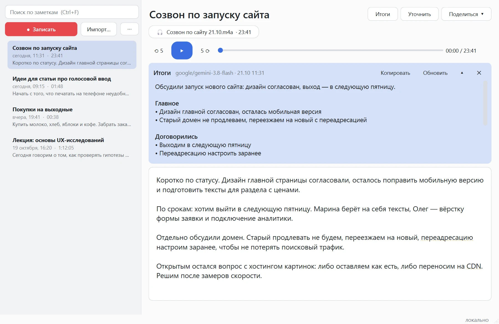
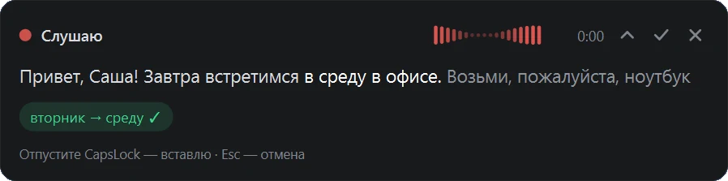
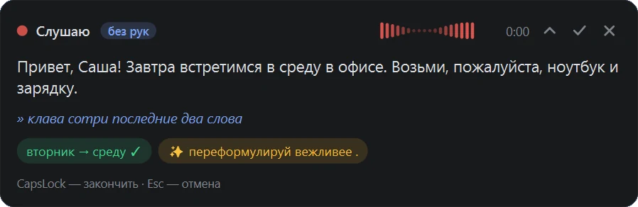
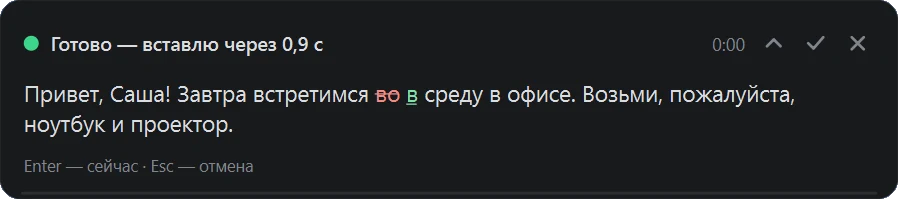
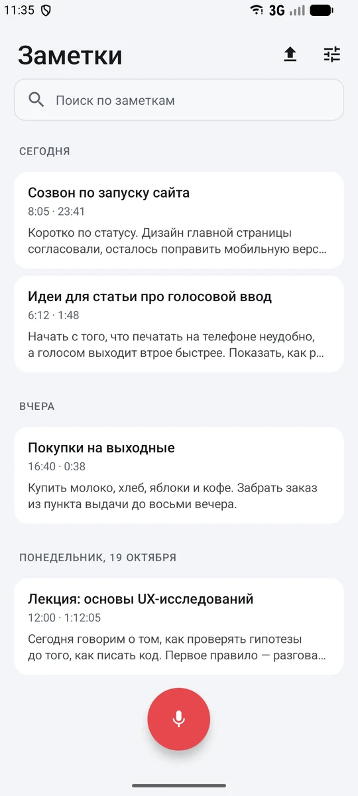
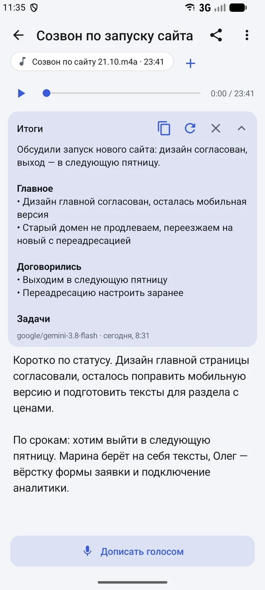
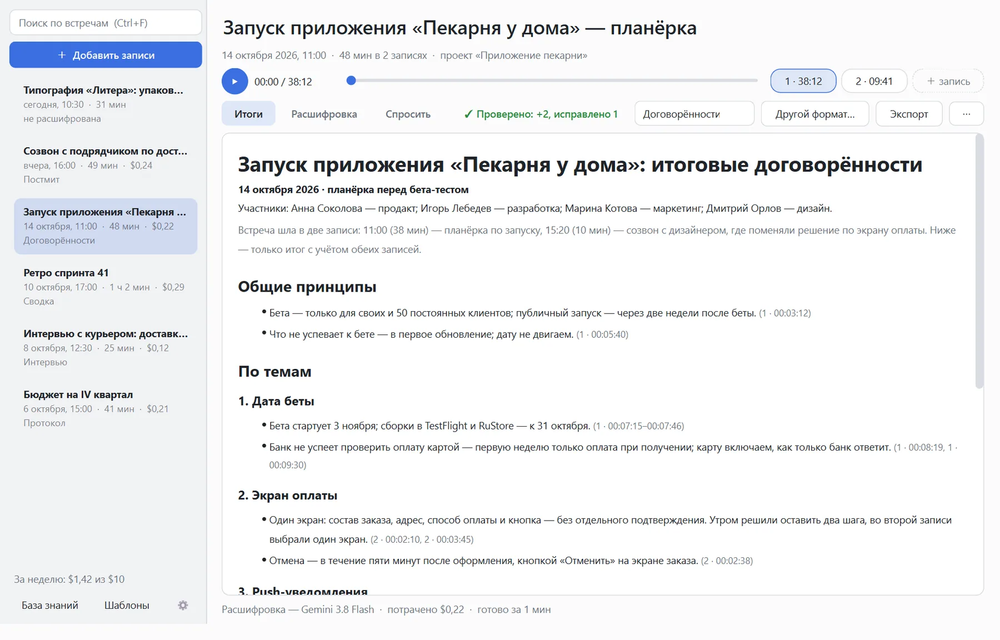

Голос вместо клавиатуры — и встречи в текст
Voice Keyboard: диктовка в любое окно Windows и любое приложение Android, правка голосом на ходу. «Голосовые заметки»: записи встреч и диктофона — в текст, итоги и задачи. «Стенограф»: встреча — в текст с говорящими по именам и итоги в нужном формате. Распознаёт прямо на вашем устройстве, облако — по желанию.

Говорите — и правьте голосом
- Удерживайте CapsLock и говорите: текст растёт в окошке поверх, отпустили — он встаёт туда, где стоит курсор. Короткое нажатие — диктовка «без рук».
- Правка на ходу:
клава, сотри последние два слова
,клава, замени вторник на среду
,с новой строки
,поставь точку
. - Перед вставкой вся запись проверяется ещё раз: исправления подсвечены, вставка — через секунду или сразу по Enter.
- На Android — кнопка микрофона у любого поля ввода, команды те же.



Встреча → текст → итоги
Второе приложение в той же установке: для записей, которые надо сохранить, а не вставить.
Любые записи
m4a, mp3, ogg из Telegram, wav, flac — перетащите в окно или «Поделитесь» с телефона. Или записывайте прямо в приложении, хоть часовую встречу.
Текст привязан к звуку
Щелчок по слову — звук с этого места. Сомнительные слова подчёркнуты, выделенный кусок перераспознаётся одной кнопкой.
Итоги встречи
Главное, о чём договорились, задачи — кто, что, когда, — и открытые вопросы. Одной кнопкой.
Уточнить
Второй проход моделью, которая слышит запись: термины, имена, пропущенное. Правленное вами не трогает.
Поиск
По всем заметкам сразу: формы слов, регистр и «ё» не важны, опечатки распознавания тоже находятся.
Поделиться
Текст, звук или всё вместе — в Telegram, почту, на диск. Файлы — под понятными именами.


Встреча → кто что сказал → итоги в нужном формате
Третье приложение в той же установке — для встреч, где важно, кто что сказал и о чём договорились. Расшифровывает облако (Gemini через ваш ключ OpenRouter): около $0,4 за час встречи.
Говорящие по именам
Участники подсказаны по началу записи и по прошлым встречам; переименовали одного — он переименован везде. Часовая встреча расшифровывается частями параллельно, имена держатся по всей записи.
Итоги в нужном формате
Договорённости, сводка, постмит, протокол, задачи, интервью — или свой шаблон и своя инструкция. Каждый пункт — со ссылкой на место записи: щелчок, и слышно, как это прозвучало.
Проверка итогов
Другая модель независимо выписывает главное и сверяет с итогами: пропущенное добавлено, неточное поправлено — и видно, что именно.
Спросить по встрече
«Что решили про оплату?», «Кто обещал макеты?» — ответ по расшифровке со ссылками на места. Непонятное место — «Переслушать» моделью посильнее.
База знаний
Термины, люди и проекты: имена и названия пишутся правильно с первой встречи проекта, а исправленное слово учится само.
Word, PDF, Markdown
Итоги и расшифровка — одним файлом для письма или Telegram. На Windows и на Android, записи — из Telegram, диктофона, видео.

Ваш голос остаётся у вас
Всё основное работает на устройстве, без ключей и сети. Облако подключается, только если вы сами этого хотите.
Распознавание на устройстве
Модель GigaAM v3 с пунктуацией: час записи на компьютере — около двух минут, на телефоне — тоже без сети.
Своя языковая модель
Qwen 3.5 или GigaChat 3.1 через llama.cpp пишут итоги и заголовки прямо на компьютере. Скачиваются в настройках.
Облако — когда нужно точнее
С ключом OpenRouter: облачное распознавание и проверка, уточнение моделью Gemini. Звук уходит в облако только там, где вы выбрали облачную модель.
Поставить за минуту
Windows 10/11
- Скачайте архив и распакуйте его в любую папку.
- voicekeyboard.exe — клавиатура: значок микрофона появится в трее у часов. voicenotes.exe — заметки. stenograf.exe — «Стенограф»: расшифровка записей встреч и итоги (облако, нужен ключ OpenRouter).
- Если Windows предупредит — «Подробнее» → «Выполнить в любом случае»: программа не подписана.
Переносная версия: настройки, ключ и заметки — в папке data рядом с программой. Обновляется сама — докачивает только изменившиеся файлы, модели заново не качаются.
Скачать zipx64 · около 250 МБAndroid 8+
- Скачайте APK на телефон и откройте его; разрешите установку из этого источника.
- На экране появятся три иконки: Voice Keyboard, Голосовые заметки и Стенограф.
- Кнопке микрофона поверх приложений нужны «Специальные возможности» — приложение проведёт по шагам.
Дальше приложение обновляется само — когда вы не диктуете.
Скачать APKоколо 25 МБ